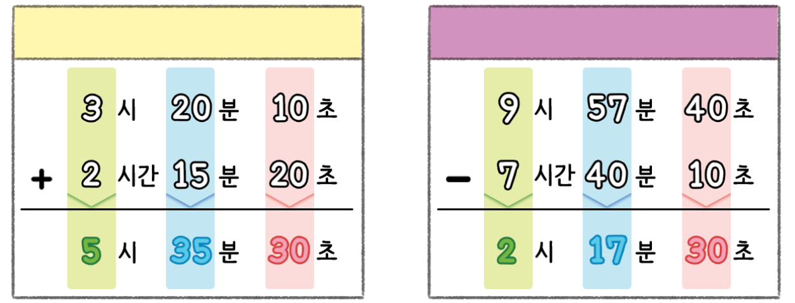
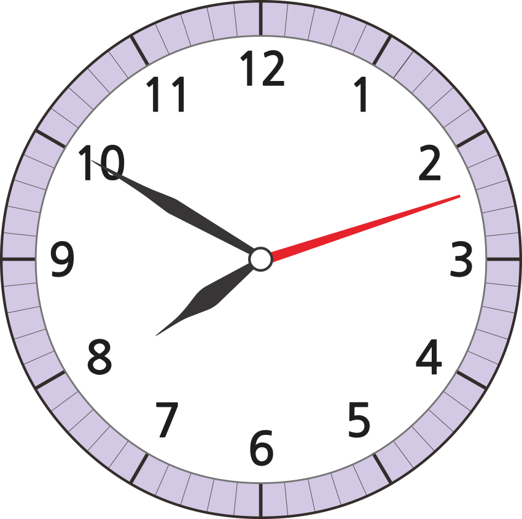
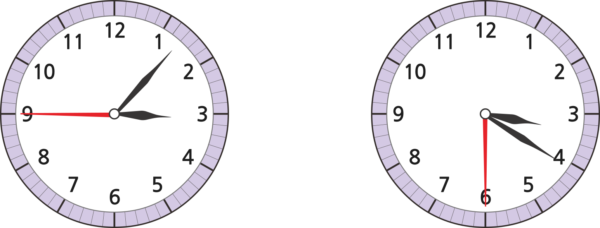

- 개념 정리
- 1
- 2
- 3
- 4
- 5
- 6
-
시간의 덧셈시간의 뺄셈
시는 시끼리, 분은 분끼리, 초는 초끼리 계산합니다.
-
1 안에 알맞은 수를 써넣으세요.
1 분 30 초 ＋ 3 분 10 초 4분 40초 4 분 54 초 － 2 분 49 초 2분 5초 -
2 시계의 시각에서 5분 41초 후의 시각을 구해 보세요.
시7분55초53 -
3 수연이는 2시 40분부터 2시간 25분 동안 운동을 했습니다. 수연이가 운동을 끝낸 시각을 구해 보세요.
시5분5 -
4 윤서가 피아노를 연주한 시간은 몇 분 몇 초인지 구해 보세요.
피아노 연주를
시작한 시각피아노 연주를
끝낸 시각분12초45 -
5 민준이는 숙제인 리코더 연습을 하고, 이어서 글씨 쓰기 연습을 했습니다. 숙제를 끝낸 시각이 11시 2분 59초였을 때, 리코더 연습을 시작한 시각을 구해 보세요.
숙제 걸린 시간 숙제 걸린 시간 리코더 연습 4분 16초 글씨 쓰기 연습 7분 38초 시10분51초5 -
6 해가 뜨고 지는 시각에 대한 기록입니다. 오늘 낮의 길이는 몇 시간 몇 분 몇 초인지 풀이 과정을 쓰고 답을 구해 보세요.
-
-
어제 해가 뜬 시각은 오전 5시 24분 40초였습니다.
-
오늘 해가 뜬 시각은 어제보다 20초 빠릅니다.
-
오늘 해가 지는 시각은 오후 7시 47분 23초입니다.
-
-
-
풀이
-
예(오늘 해가 뜬 시각)＝(어제 해가 뜬 시각)－20초 ＝오전 5시 24분 40초－20초＝오전 5시 24분 20초. 낮의 길이는 (해가 지는 시각)－(해가 뜨는 시각)이고 오후 7시는 19시와 같습니다. 따라서 (오늘 낮의 길이)＝19시 47분 23초－5시 24분 20초＝14시간 23분 3초입니다.
-
-
답14시간 23분 3초
-
-